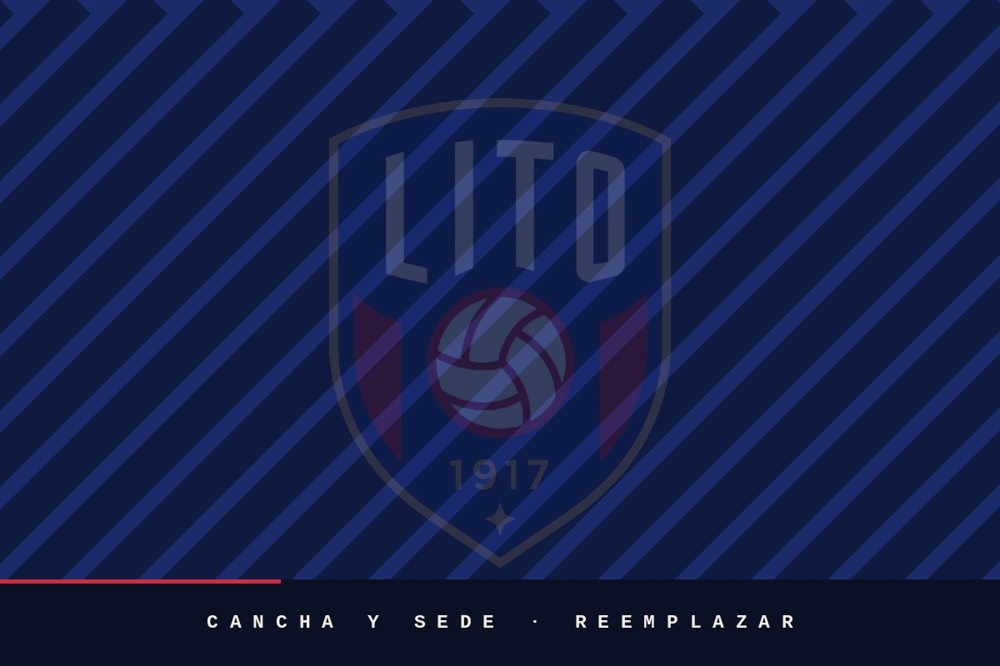

Camiseta
Azul francia · cuello y mangas con vivo rojo
Capítulo I
Nacimos el 24 de julio de 1917 en un café de Arroyo Seco. Más de un siglo después seguimos siendo del barrio.
Historia
El nombre salió del mostrador. Manuel Semino era «Lito» para todo el barrio, y su café, en Agraciada y Santa Fe, era el punto de encuentro de Arroyo Seco. Cuando el 24 de julio de 1917 los que paraban ahí decidieron fundar el club, le pusieron el nombre del café.
La primera camiseta fue azul eléctrico con vivos rojos y pantalón blanco, con el escudo sobre el pecho izquierdo. De ahí viene el apodo: la azulgrana de Arroyo Seco. La de hoy sigue esa línea: azul francia, cuello rojo y vivo rojo en las mangas.
Afiliado a la AUF, ganó la Divisional Extra en 1919 y la Intermedia en 1920. Dos ascensos al hilo lo dejaron en el Campeonato Uruguayo de 1921, y ahí se mantuvo hasta 1928. Sus mejores temporadas fueron 1922 y 1923: quinto puesto.
Por esta camiseta pasaron José Nasazzi y Héctor «el Manco» Castro, que debutaron en Lito, y también Pedro Cea. Los tres estuvieron después en las conquistas grandes de Uruguay, la del Mundial de 1930 incluida.
Durante el cisma del fútbol uruguayo, Lito fue uno de los tres clubes que presentaron dos equipos en las competencias paralelas. Al de la AUF le decían el Lito redondo; al de la Federación, el Lito cuadrado. La diferencia estaba en la forma del escudo de cada camiseta.
Cuando el fútbol se profesionalizó en 1932, el club siguió amateur y jugó en el ascenso hasta desaparecer de la competencia oficial cerca de 1947. Desde 1952 volvió a jugar en la Federación Uruguaya de Fútbol Amateur, impulsado por los hijos de Vicente Cappuccio: dos campeonatos y dos subcampeonatos. Dejó de competir en 1960.
En 2022, impulsado por Rodolfo Neme, Lito volvió a las competencias oficiales de la AUF, setenta y cinco años después, en la Divisional D. En 2023 salió campeón —2 a 0 a Rincón de Carrasco en la final— y subió a la Primera División Amateur.

Reemplazar por una foto real de la sede o la cancha.
Sede y cancha
Palmarés
Más dos campeonatos y dos subcampeonatos de Primera División Amateur en la Federación, entre 1952 y 1960.
En números
Indumentaria
El conjunto oficial de local: camiseta azul francia con cuello rojo y vivo rojo en las mangas, y pantalón blanco con vivo rojo en el ruedo.
Azul francia · cuello y mangas con vivo rojo
Blanco · vivo rojo en el ruedo
El oficial · suplente y arquero a confirmar
Institucional
La comisión se renueva en asamblea de socios. Cargar la nómina vigente y la fecha de la última asamblea.
Identidad
Blasón de cuarteles en rojo y azul, con las iniciales del club, la pelota al centro y el año de fundación al pie, todo dentro de un borde dorado. El azul y el rojo vienen de la primera camiseta, la de 1917.
Uso de marca y archivos vectoriales: marca@calito.uy
I · El club · Centro Atlético Lito